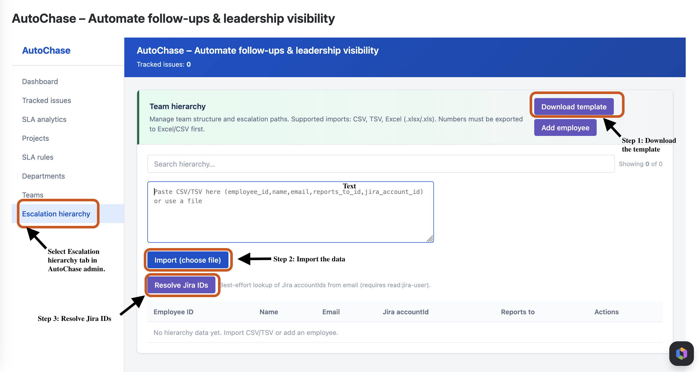
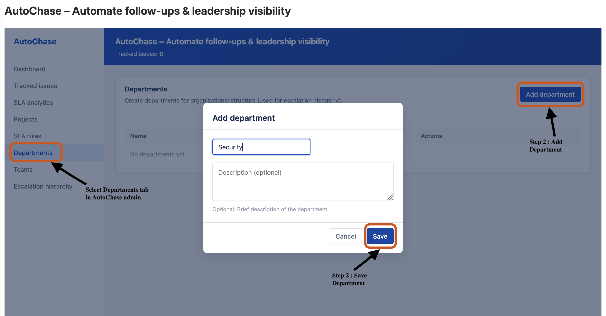
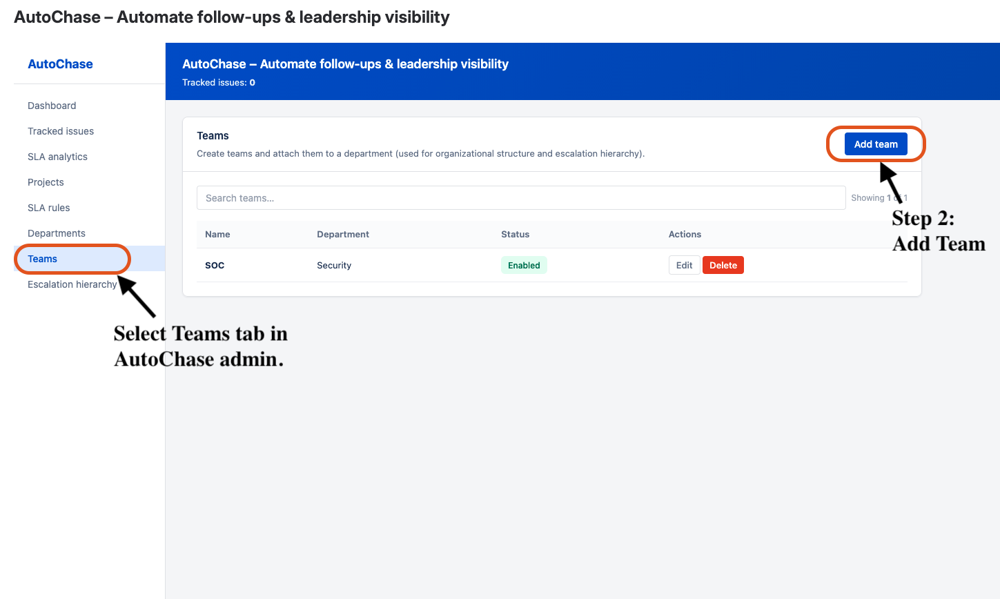
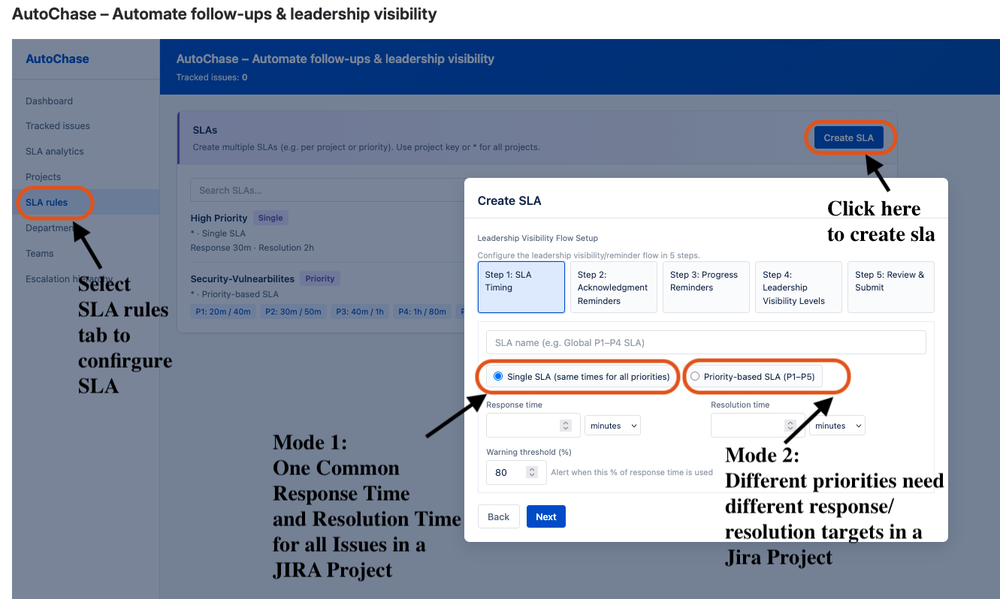
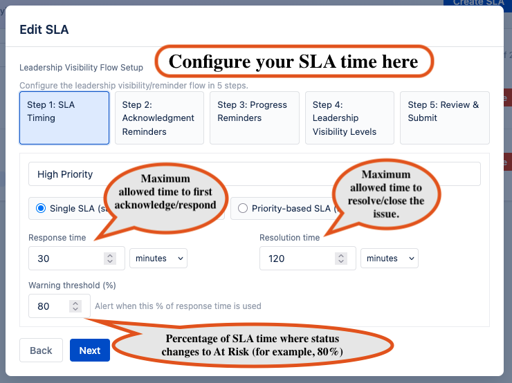
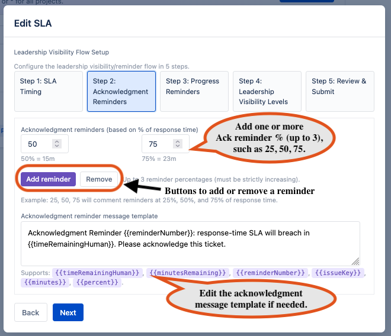
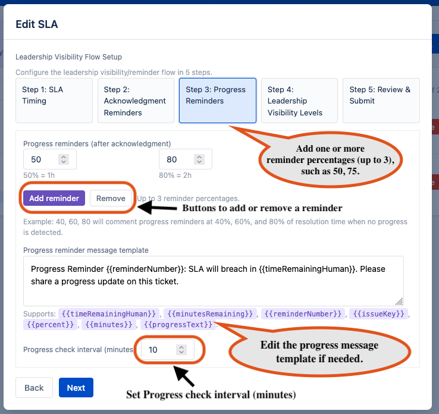
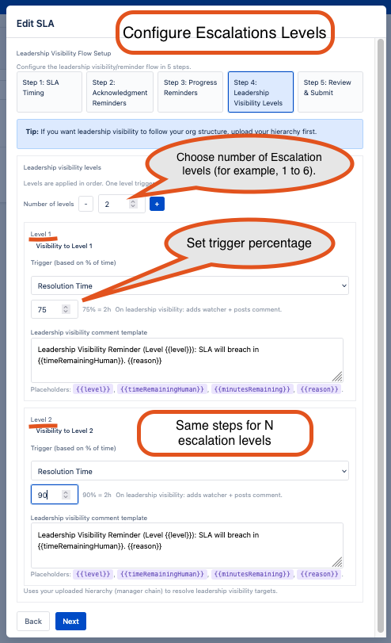
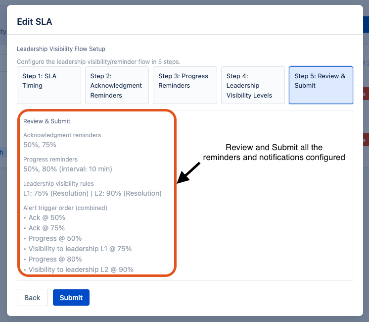

AutoChase Documentation
AutoChase tracks SLAs for Jira issues, sends reminders when at risk, and escalates to managers via your org hierarchy.
Getting Started
- Install AutoChase from the Atlassian Marketplace.
- Open Jira → Apps → AutoChase (or Manage apps → AutoChase).
- Add projects, create SLAs, and optionally upload your org hierarchy.
Setup Steps
1. Upload Team / Organisation Hierarchy
Upload your organisation structure so AutoChase can escalate to the right managers when SLAs are at risk. Go to the Escalation hierarchy tab in the sidebar.

Step 1: Download the template
Click Download template to get a CSV/TSV file in the correct format. Fill in the required columns: employee_id, name, email, reports_to_id.
Step 2: Import the data
You can either:
- Paste your CSV/TSV data into the text area, or
- Click Import (choose file) to upload a file (CSV, TSV, or Excel .xlsx/.xls).
Supported formats: CSV, TSV, Excel (.xlsx/.xls). Note: Apple Numbers files must be exported to Excel or CSV first.
After import, the data appears in the table below. During upload you will see progress messages such as "Importing..." and "Resolving Jira account IDs...".
Step 3: Resolve Jira IDs
After uploading, click Resolve Jira IDs. This fetches Jira account IDs for your employees based on their email addresses (requires read:jira-user permission). This links hierarchy rows to Jira users so escalations and watchers work correctly.
Step 4: Verify
Check the table to confirm your hierarchy data and Jira accountIds are populated. You can also add or edit employees manually using Add employee.
2. Create Departments
Use Departments to model your organisation structure for reporting and escalation hierarchy.
Step 1: Open Departments
In AutoChase Admin, click Departments from the left navigation.

Step 2: Add a Department
Click Add department, then enter:
Name (required)Description (optional)
Click Save.
Step 3: Verify in the table
The new department appears in the Departments table with status and action buttons.
Step 4: Edit or Delete
- Use Edit to update name/description.
- Use Delete to remove a department.
Note: If a department is deleted, teams linked to it become unassigned.
Best Practice
- Keep department names consistent (e.g., Engineering, Support, Product).
- Create departments before creating teams for cleaner mapping.
- Departments are for organisational structure; SLA defaults are configured at project/SLA level.
3. Create Teams
Use Teams to group projects under your organisational structure and improve escalation clarity.

Step 1: Open Teams
In AutoChase Admin, click Teams from the left navigation.
Step 2: Add a Team
Click Add team, then enter:
Team name (required)Department
Click Save.
Step 3: Verify in the table
The team appears in the Teams table with its assigned department and current status.
Step 4: Edit or Delete
- Use Edit to update team name or reassign department.
- Use Delete to remove a team.
Note: If a team is deleted, projects mapped to that team become unassigned.
How Teams are used
- Projects can be linked to a team from the Projects tab.
- Teams help analytics and escalation hierarchy reflect the org structure.
- SLA timing is controlled by SLA rules and project default SLA, not by the Teams tab.
Best Practice
- Create departments first, then map teams to departments.
4. Create SLA Rules
In AutoChase, an SLA rule defines expected timelines for issue handling and controls when reminders and leadership visibility should trigger.
You can create either:
Single SLA (same timings for all priorities) or
Priority-based SLA (P1–P5) (different timings by priority).
What each SLA field means
- SLA Name: Friendly name for this rule (for example, “Support SLA – P1 to P5”).
- Response Time: Maximum allowed time to first acknowledge/respond.
- Resolution Time: Maximum allowed time to resolve/close the issue.
- Warning Threshold (%): Percentage of SLA time where status changes to At Risk (for example, 80%).
- Acknowledgment Reminders: Reminders based on response-time usage (for example, 25%, 50%, 75%).
- Progress Reminders: Reminders based on resolution-time usage to request status updates.
- Progress Check Interval: How often AutoChase checks for progress reminders.
- Leadership Visibility Levels: Escalation thresholds that notify higher levels in your manager chain.
- Trigger Base (Response/Resolution): Whether a leadership level is calculated from response time or resolution time.
Mode 1: Single SLA (same for all priorities)
Use this when all tickets should follow one common response and resolution target.

Step 1: SLA Timing

- Go to SLA rules tab and click Create SLA.
- Enter SLA Name.
- Select Single SLA.
- Set:
- Response Time (required)
- Resolution Time (required)
- Warning Threshold (%) (recommended 80)
- Click Next.
Step 2: Acknowledgment Reminders

- Add one or more reminder percentages (up to 3), such as
25, 50, 75.
- These are calculated from response time.
- Edit the acknowledgment message template if needed.
- Click Next.
Step 3: Progress Reminders

- Add one or more reminder percentages (up to 3), such as
50, 75.
- These are calculated from resolution time.
- Set Progress check interval (minutes).
- Edit the progress message template if needed.
- Click Next.
Step 4: Leadership Visibility Levels

- Choose number of levels (for example, 1 to 6).
- For each level:
- Select trigger base: Response Time or Resolution Time.
- Set trigger percentage (1–99).
- Review the computed time hint (for clarity).
- Update leadership comment template if required.
- Click Next.
Step 5: Review & Submit

- Review:
- Acknowledgment reminders
- Progress reminders
- Leadership visibility rules
- Combined alert trigger order
- Click Submit (or Create SLA).
Result: Single SLA is saved and can be assigned from the Projects tab.
Mode 2: Priority-based SLA (P1–P5)
Use this when different priorities need different response/resolution targets.
Step 1: SLA Timing

- Click Create SLA.
- Enter SLA Name.
- Select Priority-based SLA (P1–P5).
- In the P1–P5 grid, enter response and resolution times per priority.
- Important: At least one priority row must have both response and resolution values.
- Click Next.
How priority mapping works
- AutoChase maps Jira priorities to internal levels P1–P5.
- Typical mapping:
- P1: Highest/Critical/Blocker
- P2: High/Major
- P3: Medium
- P4: Low/Minor
- P5: Lowest/Trivial
Step 2: Acknowledgment Reminders
Same flow as Single SLA. Reminders are percentage-based and calculated from effective response time.
Step 3: Progress Reminders
Same flow as Single SLA. Reminders are percentage-based and calculated from effective resolution time.
Step 4: Leadership Visibility Levels
Same flow as Single SLA. Configure percentage triggers per level using response/resolution as base.
Step 5: Review & Submit
- Confirm reminders, leadership levels, and combined trigger order.
- Click Submit.
Result: Priority-based SLA is saved and ready to be assigned to projects.
Status lifecycle used by all SLA modes
- On Track: Issue is within configured SLA limits.
- At Risk: Warning threshold reached.
- Breach: Resolution threshold crossed.
Recommended best practices
- Start with a small number of SLAs and expand gradually.
- Use clear naming conventions (for example, “Support – Priority SLA”).
- Keep reminder percentages realistic to avoid notification fatigue.
- Keep leadership levels strictly increasing by trigger percentage.
- Upload hierarchy data before relying on manager-chain visibility.
2. Add Projects
Add the Jira project keys you want to track (e.g. PROJ, SUPPORT). You can set a project owner email for escalation fallback.
4. Create SLAs
Define SLAs with response and resolution times. Match by project key (or * for all), issue type, and priority. Set warning % for when status becomes "at risk."
5. Configure Escalation Rules
Per SLA, add rules: trigger at X% of response/resolution time or after X minutes, level, auto-reassign to manager, add comment.
How It Works
- Auto-tracking: New issues in enabled projects are tracked from creation.
- SLA assignment: Matching SLA is assigned based on project, issue type, and priority.
- Status: on_track → at_risk (at warning %) → breach (at resolution time).
- Reminders: Acknowledgment and progress reminders when SLAs approach breach.
- Escalation: Every 5 minutes, escalation rules run—reassign to manager, add comment, notify via hierarchy.
- Resolution: When an issue is moved to Done/Resolved, tracking stops.
Issue Panel
On each tracked issue, open the right-hand panel SLA Status to see status, escalation level, time remaining, acknowledgment state, and assign an SLA manually if needed.
Troubleshooting
| Problem | Solution |
|---|
| Issue not tracked | Add the project in the admin. Create a new issue (or update an existing one) after adding. |
| No SLA assigned | Create an SLA matching the project key (or *), issue type, and priority. |
| Panel shows "not tracked" | Only issues in projects you added are tracked. Ensure the issue was created after the app was installed. |
| Escalation not working | Check hierarchy upload and escalation rules. Ensure manager has a Jira account linked (by email or jira_account_id). |
Support
For questions or issues, contact info@opusleaf.com or open an issue on our support channel.
AutoChase runs on Atlassian Forge. Data stays in your Jira site—no external servers.